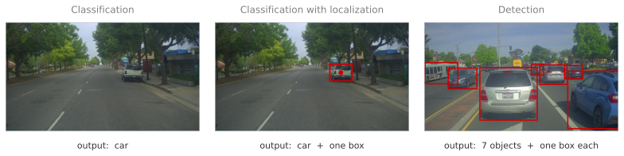
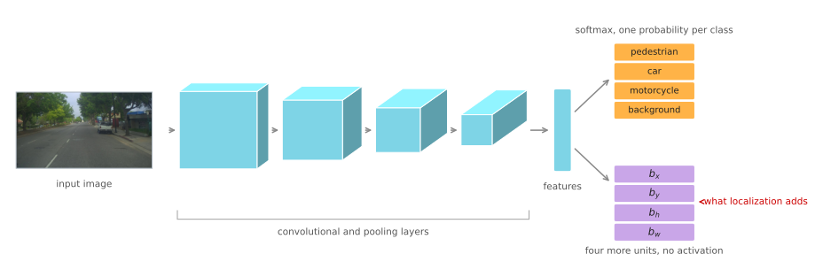
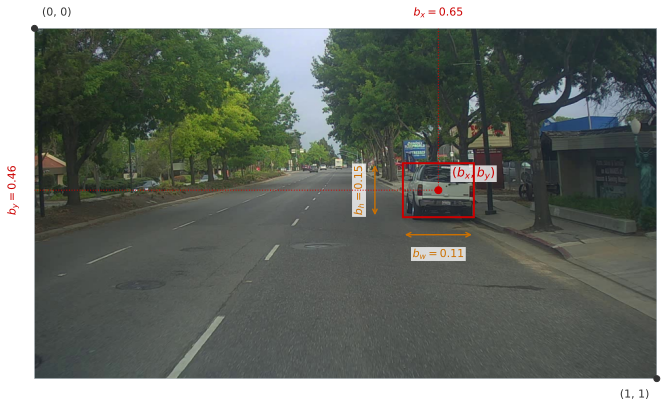
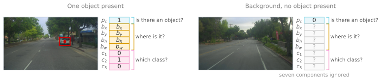
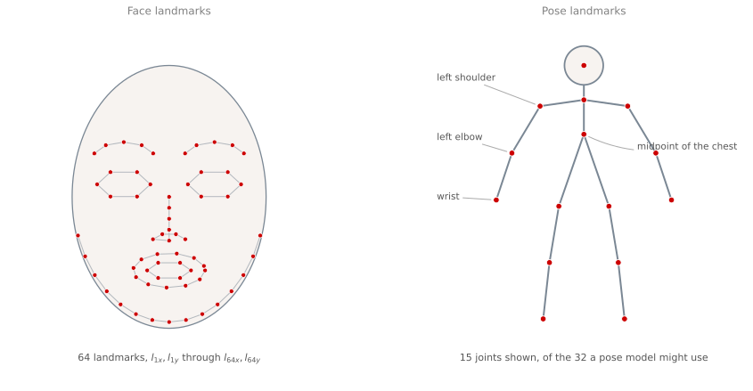

Object Localization and Landmark Detection
deep-learning
convolutional-neural-networks
computer-vision
object-detection
localization
landmarks
How a ConvNet learns to output bounding box coordinates alongside a class label, the eight component target vector, and how the same idea locates facial landmarks.
Object detection is one of the areas of computer vision that has moved fastest, and it works far better now than it did a few years ago. Getting there takes one step at a time, and the first step is object localization.
Image classification asks what is in a picture. Localization also asks where it is. The answer to “where” turns out to be nothing more exotic than a few more output numbers, trained with the same supervised learning already used for the class label. That single observation, that a network can be asked to output real numbers describing positions, carries all the way from a bounding box to the sixty-four points of a face.
Three Vision Tasks
Three related tasks come up repeatedly, and it is worth separating them before going further.
Classification takes a picture and returns a label. This is the task from Full ConvNet Example, where a picture of a car produces the answer “car” and nothing else.
Classification with localization returns the label and a box. The algorithm has to say “car” and also draw a rectangle around where in the picture the car is.
Detection drops the assumption that there is only one thing to find. A picture may hold several objects, possibly of different categories, and all of them have to be found and located. For a self driving application that could mean other cars, pedestrians, and motorcycles in the same frame.
Those are real photographs from a car mounted camera, and the red boxes were not drawn by hand. They came from running a trained detector over each frame once, offline, and recording what it found, which is why the third panel finds six cars and a bus without anyone measuring anything. The rest of this page is about what a network has to output for boxes like those to be possible at all.
The ordering of those three is not accidental. Ideas from classification carry over to classification with localization, and ideas from localization carry over to detection. This page covers the middle one, where there is at most one object to find, and that restriction is what keeps the output a fixed size.
Bounding Box Output
Start from the classification pipeline. An image goes into a ConvNet, the ConvNet produces a vector of features, and a softmax turns those features into class probabilities. For a self driving application the classes might be four.
- Pedestrian
- Car
- Motorcycle
- Background, meaning none of the above
Now suppose the position of the car is wanted as well. The change is small. Give the network four more output units, called \(b_x\), \(b_y\), \(b_h\), and \(b_w\), and let those four numbers describe the box.

Everything to the left of the two heads is the classification network, unchanged. The convolutional and pooling layers still reduce the image to a vector of features, and the softmax head still turns those features into class probabilities. Localization adds one thing, the second head, four units reading the same features and reporting numbers rather than probabilities. Those units carry no softmax and no sigmoid, because a coordinate is not a probability and squashing it would cost the network the ability to say 0.65.
Describing a rectangle takes four numbers, and the convention used here is the midpoint plus the size. So \((b_x, b_y)\) is the center of the box, \(b_h\) is its height, and \(b_w\) is its width. Coordinates are measured with the upper left corner of the image at \((0,0)\) and the lower right corner at \((1,1)\), which means \(b_y\) grows downward, and every one of the four numbers is a fraction of the image rather than a count of pixels.

Reading the numbers off that picture, \(b_x\) is 0.65 because the midpoint sits about two thirds of the way across, \(b_y\) is 0.46 because it is a little above halfway down, \(b_w\) is 0.11 because the box is about a ninth of the width, and \(b_h\) is 0.15 because it is about a seventh of the height. Four numbers, each between 0 and 1, and the rectangle is pinned down completely.
Notice how small those last two are. In footage from a car, the thing being localized usually occupies a modest patch of a wide frame, which is worth remembering later, because a network that has to find such a patch anywhere in the image is doing something harder than it looks.
For supervised learning to produce those numbers, the training set has to contain them. A labeled example is no longer an image and a class, it is an image, a class, and four coordinates, which somebody had to draw. That is the real cost of localization, and it is paid in labeling rather than in architecture.
Target Label
With eight numbers coming out of the network, the target label needs eight components too. The first one answers whether there is any object at all.
\[ y = \begin{bmatrix} p_c \\ b_x \\ b_y \\ b_h \\ b_w \\ c_1 \\ c_2 \\ c_3 \end{bmatrix} \]
\(p_c\) is 1 if one of the classes being looked for is present, and 0 if the image is background. Think of it as the probability that there is an object, meaning something other than background.
If \(p_c = 1\), then \(b_x, b_y, b_h, b_w\) give the box, and \(c_1, c_2, c_3\) say which class it is, one of pedestrian, car, or motorcycle. At most one of the three is 1, because this task assumes at most one object in the image.
Notice what happened to the fourth class. The classification pipeline had a four way softmax whose last output was background, while this target vector has only three class components. Background did not disappear, it moved into \(p_c\). Saying “no object” and saying “which object” are now two separate questions, which is exactly what allows the second question to be skipped when the answer to the first one is no.

The image on the left is a car, so \(p_c = 1\), the four coordinates describe the red box, and the class components are \(c_1 = 0\), \(c_2 = 1\), \(c_3 = 0\), since a car is class 2.
The image on the right contains none of the three classes, so \(p_c = 0\) and the remaining seven components are do not care entries, written as question marks. There is no correct bounding box for an image with no object in it, and no correct class either, so the label simply declines to say.
Loss Function
Those question marks have to mean something to the training procedure, and the loss function is where they get their meaning. Take the ground truth \(y\) and the network output \(\hat y\), and split the definition on the first component.
\[ \mathcal{L}(\hat y, y) = \begin{cases} (\hat y_1 - y_1)^2 + (\hat y_2 - y_2)^2 + \cdots + (\hat y_8 - y_8)^2, & \text{if } y_1 = 1 \\[4pt] (\hat y_1 - y_1)^2, & \text{if } y_1 = 0 \end{cases} \]
When \(y_1 = 1\), which is to say \(p_c = 1\), there is an object, every component of the label is meaningful, and squared error over all eight of them penalizes any deviation.
When \(y_1 = 0\) there is no object, components two through eight are do not care entries, and the loss ignores them completely. All that matters is how accurately the network reports \(p_c\). Whatever box it draws in that case is irrelevant, because nothing in the picture is being boxed.
Squared error over all eight components is a simplification that keeps the description short. In practice the three parts of the vector usually get losses suited to what they are. The class components \(c_1, c_2, c_3\) come from a softmax and use a log likelihood loss, the box coordinates keep squared error or something like it, and \(p_c\) uses the logistic regression loss from Logistic Regression as a Neural Network. Squared error on everything will still work reasonably well.
Review Questions
1. Why does the target vector have three class components when the classification network it grew out of had a four way softmax?
TipAnswer
Because the fourth class, background, has been separated out into \(p_c\). The softmax had to choose one of pedestrian, car, motorcycle, or background, so “nothing here” competed against the real classes as if it were one of them. Splitting the question in two lets \(p_c\) answer whether anything is present and lets \(c_1, c_2, c_3\) answer which class it is, given that something is. That split is what makes the seven ignored components possible, because there is now a single component that says the rest of the vector carries no information.
1. An image contains no pedestrian, car, or motorcycle. The network outputs \(p_c = 0.02\) and a bounding box in a completely arbitrary place. How much does the wrong box cost during training?
TipAnswer
Nothing. With \(y_1 = 0\) the loss reduces to \((\hat y_1 - y_1)^2\), so the only term that survives is the one measuring \(p_c\). The box components and the class components are absent from the loss, so no gradient flows into them from this example. That is intentional, since there is no correct answer to compare an arbitrary box against on an image with no object.
1. Why is the bounding box expressed as fractions of the image rather than as pixel counts?
TipAnswer
Because fractions are independent of the input size. With the upper left at \((0,0)\) and the lower right at \((1,1)\), the same four numbers describe the same box whether the image is 100 by 100 or 1000 by 1000, so training images and test images of different resolutions produce comparable labels. It also keeps the four outputs on a similar scale to each other and to the class outputs, which makes them easier to fit with one shared loss.
1. The label for a localization example is an image, a class, and four coordinates. Which part of that is expensive, and why does it matter here more than for classification?
TipAnswer
The four coordinates. A classification label is one choice from a short list, while a bounding box has to be drawn, and drawn consistently, by a person looking at every training image. Nothing in the architecture changes much when localization is added, since it is four more output units, so the practical cost of the task sits almost entirely in producing the labels rather than in the model.
Landmark Detection
A bounding box is four numbers describing one rectangle. Nothing restricts the idea to four, or to rectangles. In general a network can output the \(x\) and \(y\) coordinates of any number of important points in an image, and those points are called landmarks.
Take face recognition. Suppose the corner of an eye is wanted. That point has an \(x\) and a \(y\) coordinate, so the final layer gets two more units, \(l_x\) and \(l_y\), and it reports where the corner is. For all four corners of both eyes, the outputs become \(l_{1x}, l_{1y}\) for the first point, \(l_{2x}, l_{2y}\) for the second, and so on.
There is no reason to stop at the corners. Points can be placed along the eye, along the mouth so that the shape of the mouth reveals whether the person is smiling or frowning, along the edges of the nose, and around the jaw line to define the edge of the face. Pick a number, say sixty-four landmarks, annotate a training set with all of them, and the network can be trained to report every one.

The network that produces the picture on the left is the familiar one with a longer output. An image goes through a ConvNet, and the final layer emits one unit saying whether there is a face at all, followed by \(l_{1x}, l_{1y}\) down to \(l_{64x}, l_{64y}\). That is \(1 + 64 \times 2 = 129\) output units.
Landmarks like these are a building block for recognizing emotion from a face. They are also what sits behind the augmented reality filters in photo applications, the ones that draw a crown on someone’s head or warp their features, since drawing anything onto a face requires knowing where the face is in detail rather than roughly.
The same idea applies to people rather than faces. Choose key positions on a body, such as the midpoint of the chest, the left shoulder, the left elbow, the wrist, and so on, and a network can annotate all of them. With thirty-two such points, \(l_{1x}, l_{1y}\) through \(l_{32x}, l_{32y}\), the output describes the pose of the person.
One requirement makes all of this work, and it is easy to overlook because it is a property of the dataset rather than of the network. The identity of each landmark has to be consistent across every image. Landmark one is always the same corner of the same eye, landmark two is always the next specific point, and so on through the whole set. Output unit seventeen learns to predict whatever point seventeen was labeled as, so if the labeling order drifts between images, that unit is being trained on two different targets at once.
Producing that data means somebody annotating every landmark in every training image by hand, consistently. It is laborious, and it is the price of admission.
Review Questions
1. A landmark network for 64 face points has 129 output units. Where does each part of that number come from?
TipAnswer
One unit reports whether there is a face in the image at all, and each landmark needs two numbers, an \(x\) and a \(y\). So the count is \(1 + 64 \times 2 = 129\). The structure is the same as the localization vector, where one component asks whether the object is present and the rest describe geometry.
1. Why must landmark one mean the same anatomical point in every training image?
TipAnswer
Because a specific pair of output units is responsible for it. The unit that predicts \(l_{1x}\) learns one function from image to coordinate, so it can only learn something coherent if \(l_{1x}\) refers to the same point every time. If landmark one is the left corner of the left eye in some images and the right corner of the mouth in others, the unit is being asked to predict two unrelated quantities, and it will settle on something that fits neither. Consistency is a property of the labeling, and the network cannot recover it.
1. What do bounding box regression and landmark detection have in common, and why does that make them one idea rather than two?
TipAnswer
Both ask a ConvNet to output real numbers describing positions in the image, trained with ordinary supervised learning against labels somebody drew. A box is a fixed set of four such numbers with a geometric interpretation, and a landmark set is a longer list of the same kind of number. Nothing about the architecture changes between them beyond the width of the final layer, which is why the same trick extends from one rectangle to sixty-four points to a pose skeleton.
Localization and landmarks share one limitation, which is that both assume a fixed number of things to find. A single box, or a single fixed set of landmarks, is a fixed size output. Detection breaks that assumption, since the number of objects in a picture is not known in advance, and the next section starts working toward it.